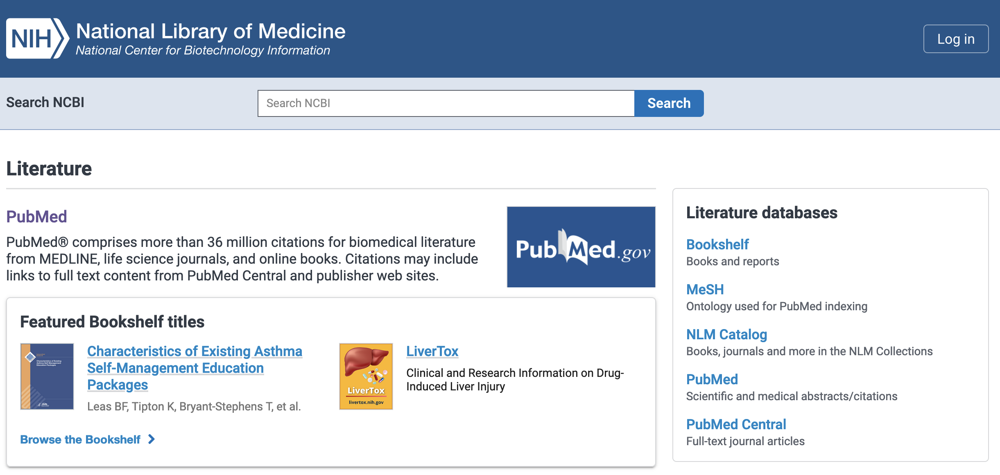
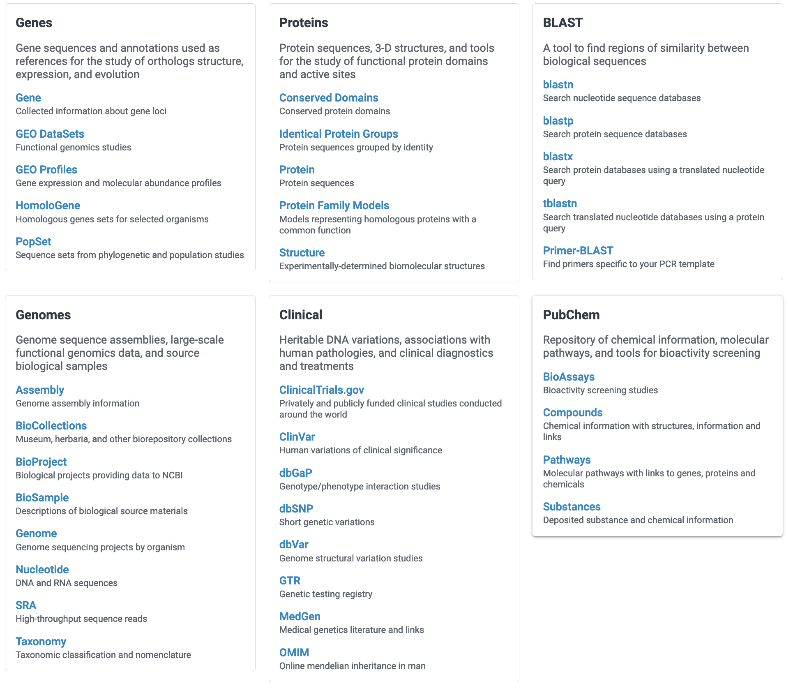
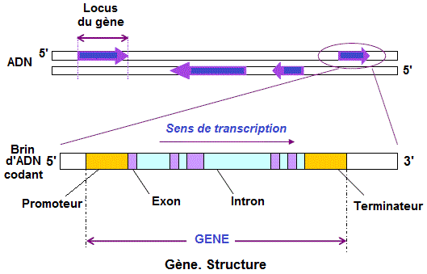
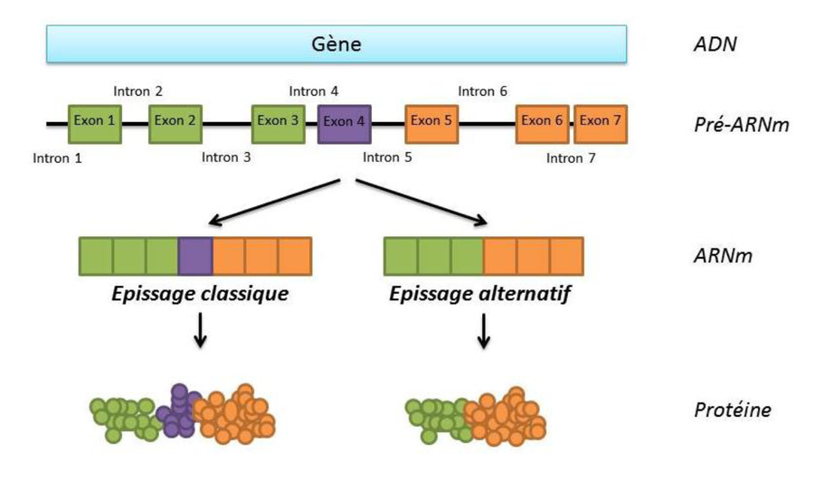
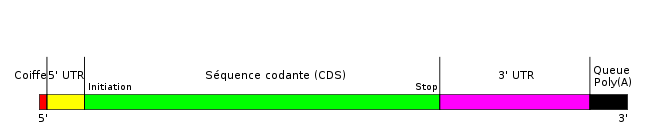

BIO504 - TP 1
À la découverte de la famille des hémoglobines via les bases de données du NCBI
1 À la découverte de la famille des hémoglobines via les bases de données du NCBI
1.1 Objectifs du TP
- Comprendre les conventions de stockage des données dans les bases de données nucléotidiques
- Exploiter ces conventions et les annotations associées afin de répondre à quelques questions d’ordre biologique
- Rechercher des informations complémentaires dans les bases de données
- Exporter des séquences nucléotidiques et protéiques
On prendra pour exemple l’étude de la famille multigénique de l’hémoglobine.
1.2 Problématique :
Maintenant que vous connaissez un peu la famille des hémoglobines, que pouvez-vous dire des gènes, des ARN messagers et des protéines de chaque famille ?
Sont-ils identiques ou différents ?
Pouvez-vous les comparer ?
Pour répondre à ces questions, vous allez utiliser le moteur de recherche du NCBI (National Center for Biotechnology Information) et analyser les données stockées sur les gènes des hémoglobines
1.3 Expérimentation du moteur de recherche du NCBI
- Ouvrez un navigateur, de préférence Mozilla Firefox
- Lancez le moteur de recherche du NCBI : http://www.ncbi.nlm.nih.gov/sites/gquery
Apparait à l’écran la liste de toutes les bases de données que vous pouvez interroger à travers ce site (voir CM1).


Pour avoir des informations sur les bases de données listées sous vos yeux, cliquez sur le bouton Help, en bas à gauche de la fenêtre du moteur de recherche.
Revenez sur la page du moteur de recherche et tapez dans la case Search NCBI : hemoglobin.
- Qu’affiche la page ?
Cherchez maintenant plusieurs gènes de la famille \(\beta\).
Pour cela, tapez dans la case Search NCBI databases : les noms de 3-4 gènes parmi les 5 suivant : HBB, HBD, HBE, HBG1, HBG2.
Comparez le nombre de résultats affichés par rapport à la recherche précédente, expliquez.
- Qu’obtenez-vous comme résultat principal dans la base de données Nucleotide ?
- Quels sont les identifiants contenus dans la page ?
1.4 Exploration d’une région génomique
- Ouvrez la fiche correspondant au code NG_000007.3 trouvée précédemment.
- Consultez cette fiche en la déroulant à l’écran, repérez et notez les noms des champs d’annotation.
- Quelles réponses pouvez-vous apporter aux questions suivantes ?
- Et dans quels champs avez-vous trouvé ces réponses ?
Informations d’ordre générale à propos de cette séquence
- À quoi correspond cette séquence ?
- À quelle espèce correspond-elle ?
- Quel est le numéro d’identification dans la base de données RefSeq
- Quel est le numéro de version ?
- Quelle est la date de la dernière mise à jour du fichier ?
- Quelle est la date de la dernière mise à jour de cette séquence ?
Bibliographie relative à cette séquence
- Combien d’articles sont référencés dans cette fiche ?
- Comment procéder pour accéder à la version pdf de cet(ces) article(s) original(aux) ?
Analyse chromosomique
- Quelle est la longueur totale en bases de la région étudiée ?
- Par quel chromosome cette séquence est-elle portée ?
- Quelle est sa position dans la cartographie du chromosome en question ?
Analyse génique
- Combien de gènes sont listés dans cette fiche ?
- Combien d’ARNm ?
- Pouvez-vous lire directement dans la page leurs tailles ?
1.5 Exploration de la région génomique du gène HBB
Pour obtenir les tailles, vous allez vous intéresser dans un premier temps au seul gène HBB.
- Localisez le gène HBB en utilisant les fonctions de recherche du navigateur (Ctrl-F/Ctrl-G ou Cmd-F/Cmd-G) pour trouver rapidement où se trouve les informations relatives au gène HBB.
- Pour vous aidez à répondre aux questions suivantes, un petit rappel de biologie moléculaire vous est présenté ci-dessous :
| Quelques rappels de biologie moléculaire |
|
La structure d’un gène :  |
|
L’épissage alternatif d’un gène :  |
|
La structure d’un ARN messager eucaryote mature :  |
Répondez aux questions suivantes:
- Quelle est la taille (en nombre de nucléotides) du gène HBB ?
- Combien d’exons compte-t-il ?
- Combien d’introns ?
- Quelle est la taille de l’ARNm ?
- Quelle est la taille de la CDS ?
- Délimitez les segments 5’UTR et 3’UTR.
- Quelles sont leurs tailles ?
- Retrouvez l’emplacement du codon d’initiation.
- Retrouvez l’emplacement du codon de terminaison.
- Retrouvez l’emplacement de la tataa box (motif : ataaa).
Analyse de la protéine :
- Quelle sera la taille (en nombre d’acides aminés) de la protéine HBB ?
1.6 Caractérisation des gènes de la famille des \(\beta\)-globines
Vous avez noté que les 5 gènes de la famille des \(\beta\)-globines étaient décrits dans la séquence (HBB, HBD, HBE1, HBG1 et HBG2).
- Compte-tenu de tout ce que vous venez de réaliser sur le gène HBB, finissez de remplir le tableau ci-dessous :
HBB HBD HBE1 HBG1 HBG2 Taille du gène (pb) . . . . . Nombre d’exons . . . . . Nombre d’introns . . . . . Taille de l’exon1 (pb) . . . . . Taille de l’exon2 (pb) . . . . . Taille de l’exon3 (pb) . . . . . Taille de l’ARNm (nb) . . . . . Taille de la CDS (nb) . . . . . Taille du 5’UTR (nb) . . . . . Taille du 3’UTR (nb) . . . . . Taille de la protéine (aa) . . . . . - Que pouvez-vous maintenant conclure quant aux différents gènes de \(\beta\)-globine ?
1.7 Représentation graphique des gènes de la famille des \(\beta\)-globines
Représentation graphique de la séquence génomique NG_000007.3 :
- Recherchez à nouveau la fiche de la séquence NG_000007.3 sur le site du NCBI
- Activez le bouton Graphics qui se trouve à droite du bouton FASTA
- Concentrez vos observations sur l’encadré Genes
Vérifiez notamment que les informations de longueurs de séquences qui vous sont données dans les encadrés contextuels (qui apparaissent lorsque vous déplacez la souris sur des objets : gène, ARNm, protéine….) sont conformes à ceux que vous avez déjà calculés.
Vérifiez bien les longueurs pour chacun des 3 exons des 5 gènes caractérisés.
- En utilisant les liens portés par la fiche NG_000007.3, accédez à la base de données CCDS
- Expliquez ce qu’est cette base de données ?
- Que contient-elle ?
- Comment est représenté l’apport de chaque exon dans la constitution de la CDS et de la protéine.
- Quel est son intérêt ?
1.8 Exportation au format FASTA des séquences d’intérêt
Afin de pouvoir réaliser des opérations de comparaison de séquences par la suite, il est indispensable de pouvoir extraire les séquences à étudier dans un format standard d’échange des données. Il s’agit du format FASTA (ou Pearson).
Pour ce faire, il faudra opérer selon la procédure détaillée ici.
- Créez un dossier Sequences dans votre espace (ex : BIO504 > Sequences)
- Naviguez sur chacune des séquences des gènes, ARNm, CDS et protéines des différents membres de la famille \(\beta\)-globine et sauvegardez chaque séquence dans ce dossier.
1.9 Sauvegarde de votre travail
Si vous avez travaillé directement sur la fiche en donnant vos réponses dans les zones de texte à votre disposition, vous pouvez conserver votre travail en sauvegardant la page au format Page Web complète.
Cette option dépend du navigateur utilisé et de votre OS.
Dans le cas de Firefox, choisissez le menu Fichier > Enregistrer la page sous… avec le format Page Web, complète comme indiqué sur la figure ci-dessous (à adapter en fonction de votre système et de la langue) :

- Sauvegardez dans votre espace (ex : BIO504 > Réponses)
1.10 Contrôle continu : Les \(\alpha\)-globines
Une autre fiche NCBI décrit les gènes de la famille des \(\alpha\)-globines. Il s’agit de la séquence NG_000006.1. Vous caractériserez les gènes de la famille des \(\alpha\)-globines en vous aidant de cette entrée NCBI.
En vous basant sur la séquence décrite, vous traiterez la partie 1.4 et la partie 1.6 dans le cas des gènes des \(\alpha\)-globines
Vous ajouterez une comparaison de séquence en vous basant sur les partie 1.2 et partie 1.4 du TP2
- Que concluez-vous maintenant sur les gènes des \(\alpha\)-globines ?
- Sur les gènes des hémoglobines ?
- Que concluez-vous sur les protéines d’\(\alpha\)-globine ?
Vous rendrez votre travail sous la forme d’un rapport de 4 pages maximum (numérotées de 1 à 4).
Ce rapport sera à rendre au format PDF et déposé sur Moodle dans l’espace correspondant à votre groupe AVANT votre dernière séance de TP.
Il devra contenir un titre cohérent, une introduction présentant l’objectif du travail, une partie matériels et méthodes décrivant les techniques que vous aurez utilisées, une partie résultats correspondant aux réponses aux différentes questions posées, et une conclusion. Les illustrations seront correctement titrées, numérotées et légendées (les principes de présentations vus en BIO501 s’appliquent également ici).
Le fichier du rapport sera enfin nommé avec les noms des auteurs sous la forme BIO504_NOM1_NOM2.pdf
Le respect de toutes ces consignes sera évalué au même titre que le contenu du rapport.
Ces pages de Thierry Gautier sont licenciées CC BY-NC-SA 4.0